Home / Past papers / MLP Quiz 2 / this paper
IIT M DIPLOMA AN EXAM QDD2 01 Dec 2024 - 01 Dec 2024
MLP Quiz 221 questions50 marks13 MCQ · 4 MSQ · 4 SADiploma / afternoon / QDD2
Elapsed 00:00
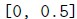
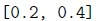
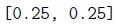
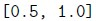
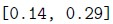
- It assigns equal weightage to L1 and L2 regularizations.
- It applies only L2 regularization.
- It applies only L1 regularization.
- It disables regularization completely.
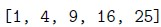
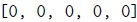
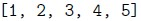
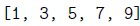
- The data will be standardized without centering, preserving the mean of thedataset.
- The data will be centered but not scaled, leading to variance issues.
- The parameter has no effect; the data will always be centered regardless ofthis setting.
- The scaling operation will be disabled entirely, leaving the data unchanged.
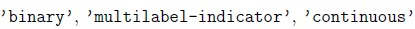
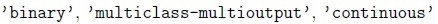
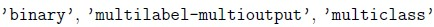
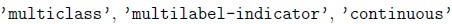
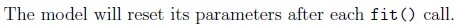
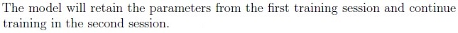
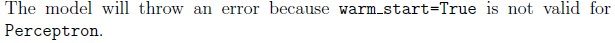
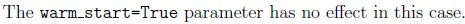
- LogisticRegression
- Perceptron
- RidgeClassifier
- Support Vector Machine (SVM)
- LassoClassifer
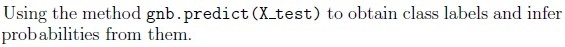
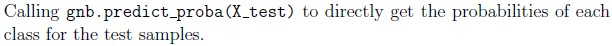
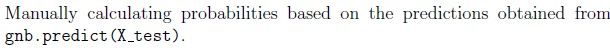
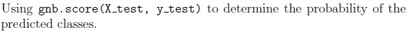
- The boundaries become more complex and tightly fitted to the training data.
- The boundaries become more regular and smooth.
- Decision boundaries are unaffected by C.
- The number of support vectors decreases.
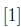
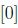
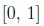
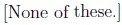
- It defines the tolerance for stopping criteria.
- It defines the learning rate schedule.
- It controls regularization strength.
- It controls the number of iterations.
Q14MSQ2 marksselect all that apply- ’linear’
- ’quadratic’
- ’rbf’
- ’sigmoid’
Q15MSQ2 marksselect all that apply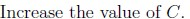
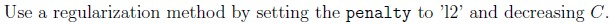
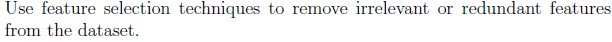
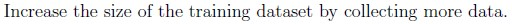
Q16MSQ2 marksselect all that apply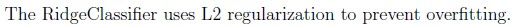
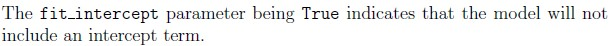
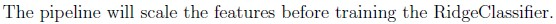
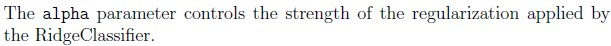
Q17MSQ3 marksselect all that apply
Answer key
- Q1 (MCQ, 3 marks): E
- Q2 (MCQ, 3 marks): A
- Q3 (MCQ, 3 marks): A
- Q4 (MCQ, 3 marks): A
- Q5 (MCQ, 2 marks): B
- Q6 (MCQ, 2 marks): B
- Q7 (MCQ, 2 marks): D
- Q8 (MCQ, 2 marks): C
- Q9 (MCQ, 2 marks): B
- Q10 (MCQ, 2 marks): A
- Q11 (MCQ, 2 marks): C
- Q12 (MCQ, 2 marks): A
- Q13 (MCQ, 2 marks): A
- Q14 (MSQ, 2 marks): A, C, D
- Q15 (MSQ, 2 marks): B, C, D
- Q16 (MSQ, 2 marks): A, C, D
- Q17 (MSQ, 3 marks): A, B
- Q18 (SA, 3 marks): 0.012 to 0.022
- Q19 (SA, 3 marks): 60
- Q20 (SA, 3 marks): 7
- Q21 (SA, 2 marks): 3.5
Concepts this paper tests
Auto-generated summary from the source site. Handy as a checklist; the lessons above explain each idea from scratch.
Summary of Core Topics, Concepts, Principles, and Equations
1. Machine Learning Models and Algorithms
Ridge Regression
- Concept: Linear regression with L2 regularization.
- Equation: RSS+λ∑j=1pβj2
- Key Parameter:
alpha (regularization strength).
Polynomial Regression
- Concept: Extending linear regression by adding polynomial terms.
- Equation: y=β0+β1x+β2x2+⋯+βnxn
Logistic Regression
- Concept: Classification algorithm for binary and multiclass problems.
- Equation: σ(z)=1+e−z1
- Key Parameters:
penalty, C.
Gaussian Naive Bayes
- Concept: Probabilistic classifier based on Bayes' theorem.
- Equation: P(y∣X)=P(X)P(X∣y)P(y)
Perceptron
- Concept: Linear classifier for binary classification.
- Equation: y=sign(w⋅x+b)
2. Model Evaluation Metrics
Precision Score
- Concept: Ratio of true positives to the sum of true and false positives.
- Equation: Precision=TP+FPTP
Mean Squared Error (MSE)
- Concept: Average squared difference between predicted and actual values.
- Equation: MSE=n1∑i=1n(yi−y^i)2
R² Score
- Concept: Coefficient of determination.
- Equation: R2=1−SStotSSres
3. Data Preprocessing and Feature Engineering
StandardScaler
- Concept: Standardizes features by removing the mean and scaling to unit variance.
- Equation: z=σx−μ
Polynomial Features
- Concept: Generates polynomial and interaction features.
- Equation: x1,x2,x12,x1x2,x22,…
CountVectorizer
- Concept: Converts text documents to a matrix of token counts.
- Key Parameter:
ngram_range.
4. Hyperparameter Tuning and Model Selection
GridSearchCV
- Concept: Exhaustive search over specified parameter values for a model.
- Key Parameters:
param_grid, cv, scoring.
Pipeline
- Concept: Sequentially applies a list of transforms and a final estimator.
- Example:
Pipeline([('scaler', StandardScaler()), ('classifier', SVC())])
5. Handling Missing Data
KNNImputer
- Concept: Imputes missing values using the K-Nearest Neighbors approach.
- Key Parameters:
n_neighbors, weights.